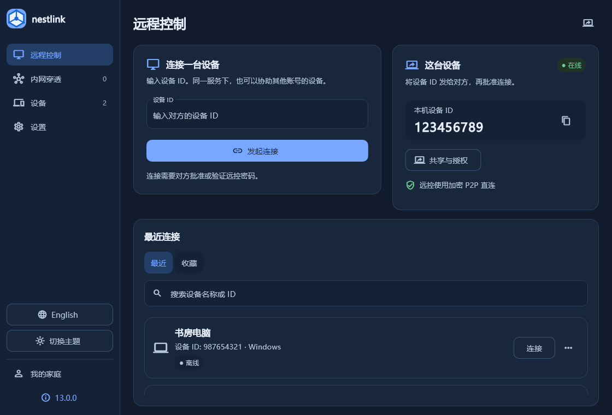
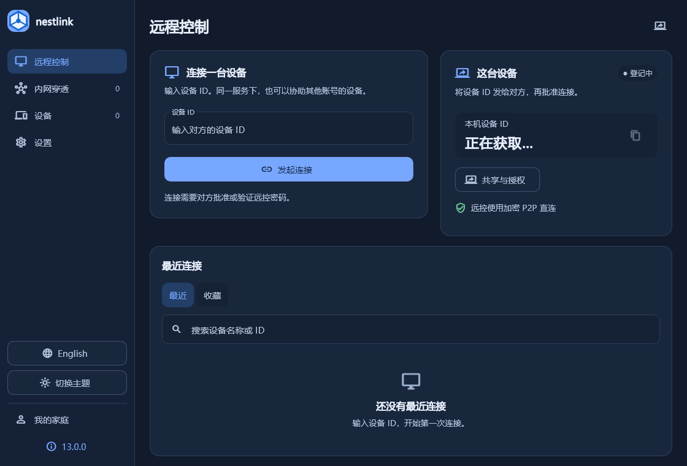
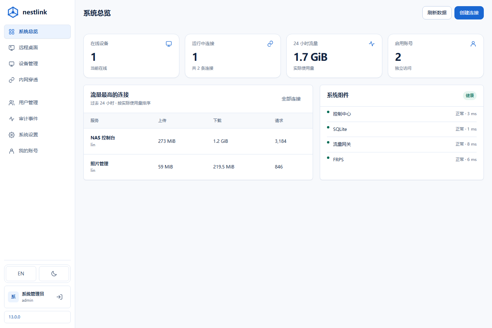
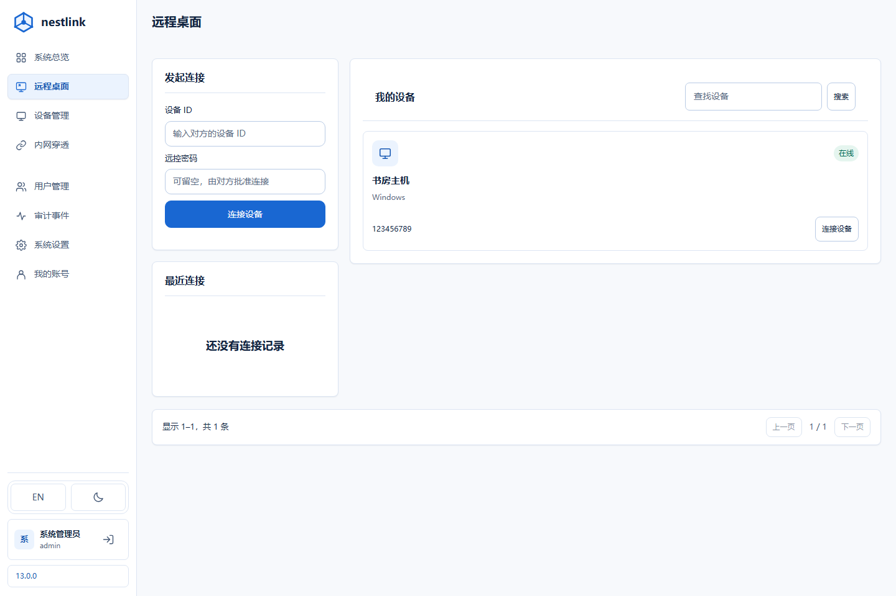
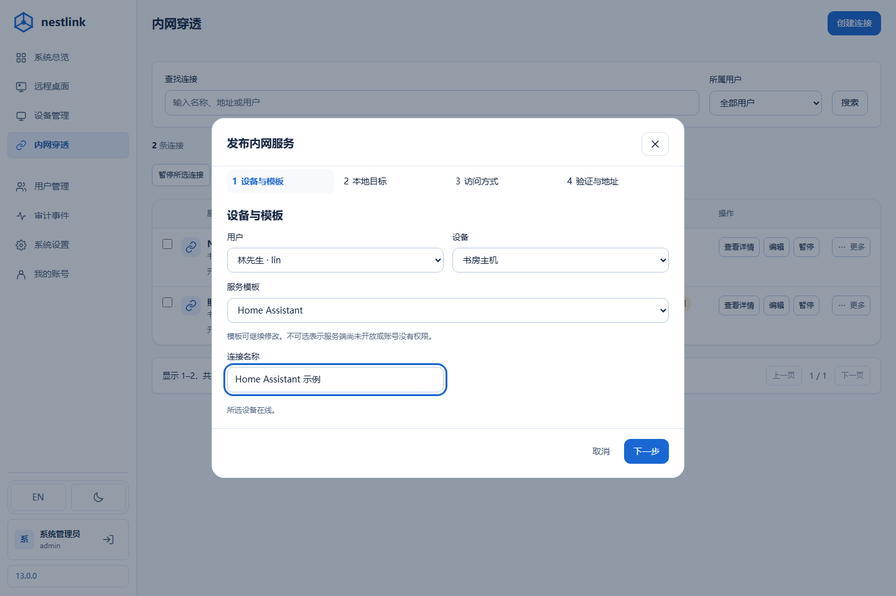

INTERFACE / 13.0.0
把每一种连接，放在合适的位置。
当前 Web 页面与桌面组件，包含浅色、深色和空状态。使用示例数据；截图不代表安装版或远控会话验收。






为日常使用整理界面
远控、穿透、设备与设置统一导航，账号和版本入口放在底部。
控件保持紧凑。内容可以正常滚动，右侧不显示上下滚动条。
手机导航随屏幕适配，主题与语言在各主要页面保持一致。
当前 Web 页面与桌面组件，包含浅色、深色和空状态。使用示例数据；截图不代表安装版或远控会话验收。





远控、穿透、设备与设置统一导航，账号和版本入口放在底部。
控件保持紧凑。内容可以正常滚动，右侧不显示上下滚动条。
手机导航随屏幕适配，主题与语言在各主要页面保持一致。